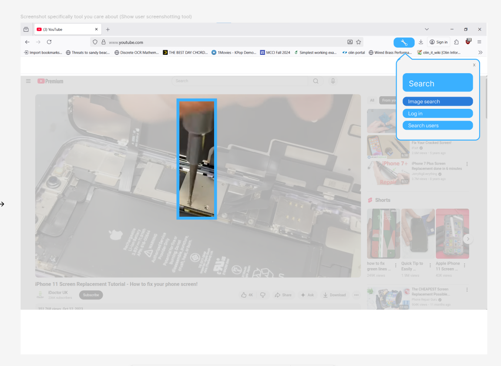

Level 4
Medium Fidelity Prototyping
Now that we had decided who our target audience was, and we had some design representations to build off of, our next goals were: build a medium-fidelity, interactive prototype using a graphical design tool, and understand the tradeoffs compared to low-fi prototyping.
Choosing the Best Idea
The first thing we had to do with this level was decide on our best idea from the previous level (see Level 03). We made this decision through team retrospection on all the insights we gained from our interviews. We found that most people were much more excited by the idea of a search tool, more engaged with that idea, and found the most value in it. So we took our web extension searching idea, and built it up in this level. We decided to name our product DIY Pro.
Medium-Fidelity Prototype
We expanded more on our initial search tool idea, adding more elements. Below are the main task flows of our product.
- Tool Image Search: Use the DIY Pro extension to screenshot an image, search, and view closest matches.
- View purchasing options: After selecting the closest match, view purchasing and filter options from different online retailers and secondhand sites.
- Register as Expert Repairer: People who are experienced with certain types of repairs, like phone repair, can sign up as expert repairers. When a tool is labeled as being used for that type of repair, those experts will show up so users know who they can reach out to for help.
The first two elements help novice repairers find and purchase affordable tools. The final element connects beginners with experienced repairers who are eager to help, build confidence in others, and give back to their repair communities.
We decided to use Figma to make our medium fidelity design representations. We valued using the intuitive uses of Figma models, while still balancing the actual interactive nature of those models. This worked extremely well for our team, and we created an interactive model of how our extension would work. Link to our Figma Prototype
Below is an example of what the tool image search looks like in our medium fidelity prototype.
